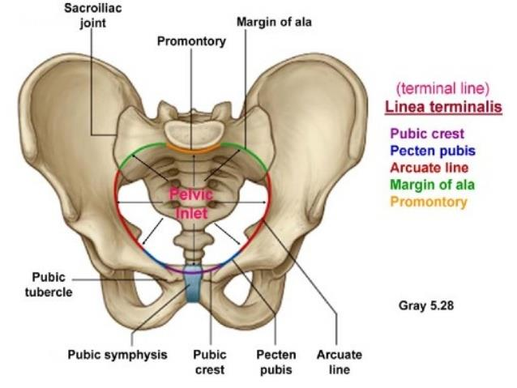
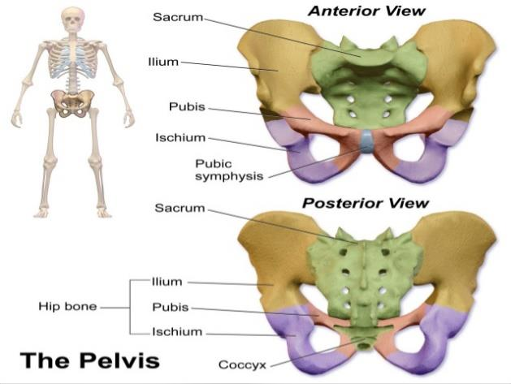
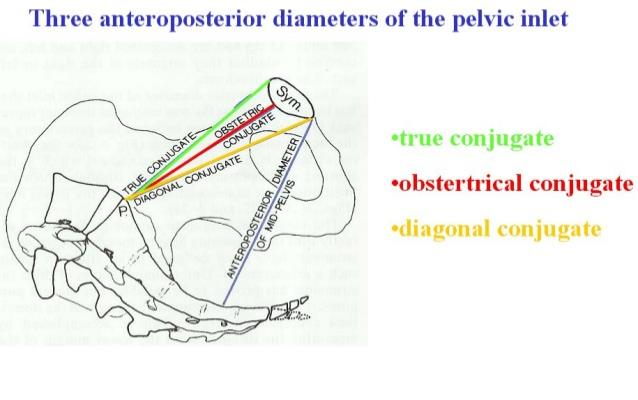
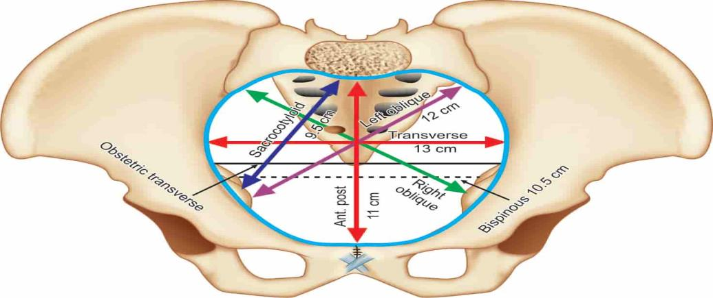
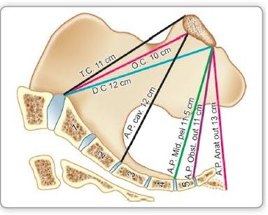
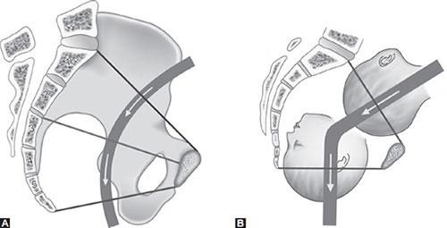
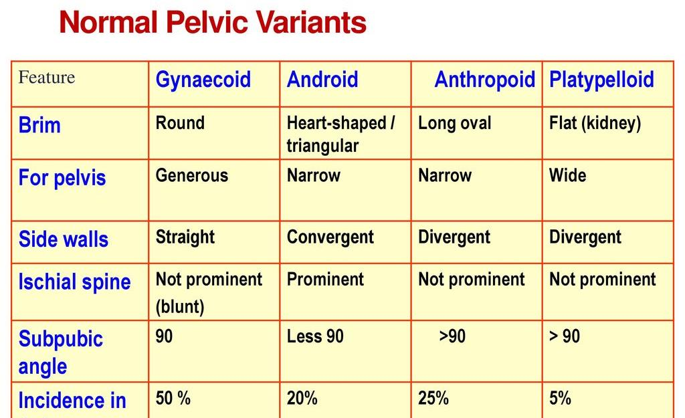
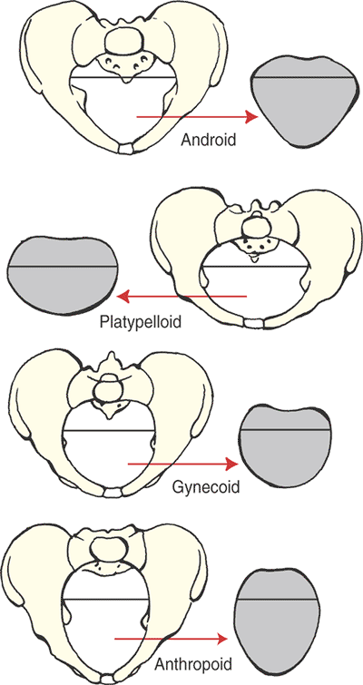
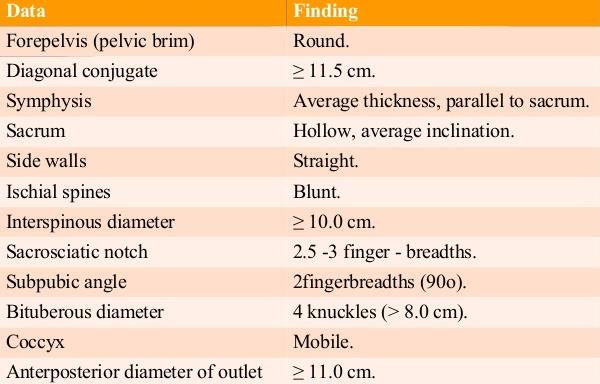

2 · Anatomy of the Bony Pelvis — the three compartments
The true pelvis is divided into three compartments:
1. Pelvic inlet
Also called the pelvic brim. The superior opening into the true pelvis.
2. Pelvic cavity
The space between the inlet and the outlet — where the fetus negotiates the birth canal.
3. Pelvic outlet
Has two definitions: anatomical and obstetrical (see §8).
Source visuals — inlet & pelvic bones
Source Image

Source: Provided Material (Chapter 20 — Female Pelvis)
Figure 1 — Superior view of the pelvic inlet (pelvic brim). The Linea terminalis (purple) is formed by the pubic crest + pecten pubis (blue) and the arcuate line + margin of ala (purple); the inlet itself is highlighted in red.
Source Image

Source: Provided Material (Chapter 20 — Female Pelvis)
Figure 2 — The pelvis: anterior and posterior views. The hip bone (innominate bone) is formed by the fusion of the ilium + pubis + ischium. The sacrum and coccyx complete the posterior wall.
3 · The Pelvic Inlet — overview of the diameters
The pelvic inlet is an irregular circumference; three groups of diameters can be defined:
3a · Anteroposterior (conjugate)
Sacral promontory → symphysis pubis. Three measurements: true, obstetric, diagonal.
3b · Transverse
Widest side-to-side distance across the inlet (anatomical and obstetric).
3c · Oblique + sacro-cotyloid
Right and left obliques, plus the two sacro-cotyloid diameters.
Each group is described in detail in §4–§6.
4 · Anteroposterior (conjugate) diameters of the inlet
Source Image

Source: Provided Material (Chapter 20 — Female Pelvis)
Figure 3 — Three anteroposterior diameters of the pelvic inlet (sagittal view). The image labels the line that goes from the sacral promontory to the most bulging point on the back of the symphysis pubis as "obstertrical" — a typographical error in the source material preserved verbatim.
| Diameter |
Value |
Landmarks & clinical note |
Anatomical antero-posterior diameter
(True conjugate) |
11 cm |
From the tip of the sacral promontory to the upper border of the symphysis pubis. |
Obstetric conjugate
(Obstetric antero-posterior diameter) |
10.5 cm |
From the tip of the sacral promontory to the most bulging point on the back of the symphysis pubis, which is about 1 cm below its upper border. It is the shortest antero-posterior diameter. |
| Diagonal conjugate |
12.5 cm |
i.e. 1.5 cm longer than the true conjugate. From the tip of the sacral promontory to the lower border of the symphysis pubis. |
Clinical pearl: The diagonal conjugate (12.5 cm) is the only one of the three conjugates that can actually be measured clinically on vaginal examination — the true and obstetric conjugates must be inferred (true ≈ diagonal − 1.5 cm).
5 · Transverse diameters of the inlet
Source Image

Source: Provided Material (Chapter 20 — Female Pelvis)
Figure 4 — Pelvic inlet (superior view) with the obstetric conjugate (red, 11 cm), a sacro-cotyloid diameter (blue, 9.5 cm) and the transverse diameters marked on the brim.
| Diameter |
Value |
Landmarks & clinical note |
| Anatomical transverse diameter |
13 cm |
Between the farthest two points on the iliopectineal lines. It lies 4 cm anterior to the promontory and 7 cm behind the symphysis. It is the largest diameter in the pelvis. |
| Obstetric transverse diameter |
12 cm |
It bisects the true conjugate and is slightly shorter than the anatomical transverse diameter. |
6 · Oblique & sacro-cotyloid diameters of the inlet
Source Image

Source: Provided Material (Chapter 20 — Female Pelvis)
Figure 5 — Sagittal view of the female pelvis showing the inlet, cavity and outlet, with selected diameters labelled: T.C. (transverse conjugate) 11 cm, D.C. (diagonal conjugate) 12 cm, A.P. cav. (anteroposterior of cavity) 12 cm.
| Diameter |
Value |
Landmarks |
| Right oblique diameter |
12 cm |
From the right sacroiliac joint to the left iliopectineal eminence. |
| Left oblique diameter |
12 cm |
From the left sacroiliac joint to the right iliopectineal eminence. |
| Sacro-cotyloid diameters |
9.5 cm |
From the promontory of the sacrum to the right and left iliopectineal eminence — so the right diameter ends at the right eminence. |
7 · The Pelvic Cavity
The pelvic cavity is the space between the symphysis pubis and the sacrum.
Boundaries
- Roof — the plane of the pelvic brim (pelvic inlet).
- Floor — the plane of least pelvic dimension.
- Anteriorly — the shorter symphysis pubis.
- Posteriorly — the longer sacrum.
It is like a circle with its half measured about 12 cm.
8 · The Pelvic Outlet — anatomical & obstetric
Anatomical outlet (lozenge-shaped)
Bounded by:
- The lower border of the symphysis pubis.
- The pubic arch.
- The ischial tuberosities.
- The sacrotuberous and sacrospinous ligaments.
- The tip of the coccyx.
Obstetric outlet (a segment, not a plane)
Boundaries:
- Roof — the plane of least pelvic dimension.
- Floor — the anatomical outlet.
- Anteriorly — the lower border of the symphysis pubis.
- Posteriorly — the coccyx.
- Laterally — the ischial spines.
9 · Diameters of the pelvic outlet (AP & transverse)
Anteroposterior diameters
| Diameter |
Value |
Landmarks & clinical note |
| Anatomical antero-posterior diameter |
11 cm |
From the tip of the coccyx to the lower border of the symphysis pubis. |
| Obstetric antero-posterior diameter |
13 cm |
From the tip of the sacrum to the lower border of the symphysis pubis — the coccyx moves backwards during the second stage of labor. |
Transverse diameters
| Diameter |
Value |
Landmarks |
| Bituberous diameter |
11 cm |
Between the inner aspects of the ischial tuberosities. |
| Interspinous diameter |
10.5 cm |
Between the tips of the ischial spines. |
Note: The interspinous diameter (10.5 cm) is widely cited as the smallest pelvic dimension and the plane at which the fetal head most commonly arrests in the second stage.
10 · The Obstetric Axis (Curve of Carus)
- It is an imaginary line representing the way passed by the head during labor.
- It is J shaped: passes downwards and backwards along the axis of the inlet till the ischial spines where it passes downwards and forwards along the axis of the pelvic outlet.
Source Image

Source: Provided Material (Chapter 20 — Female Pelvis)
Figure 6 — Obstetric axis (Curve of Carus). Panel A: the curved gray band shows the J-shaped path the fetal head must take. Panel B: the same axis with a fetal head engaged in the inlet and descending through the cavity along the curve.
11 · Types of pelvis — Caldwell–Moloy classification
We have 4 types or shapes of the bony pelvis:
Source Image

Source: Provided Material (Chapter 20 — Female Pelvis)
Figure 7 — "Normal Pelvic Variants" — comparison table of the four Caldwell–Moloy pelvic types (Gynecoid, Android, Anthropoid, Platypelloid) with features of the brim, fore-pelvis, side walls, ischial spines, subpubic angle, and incidence.
1 · Gynecoid pelvis — 50%
The classic female pelvis.
2 · Android pelvis — 20%
The typical male pelvis.
3 · Anthropoid pelvis — 25%
Anteroposterior diameter is greater than the transverse — ape-like inlet.
4 · Platypelloid pelvis — 5%
Flat pelvis — transverse diameter is greater than the anteroposterior.
Source Image

Source: Provided Material (Chapter 20 — Female Pelvis)
Figure 8 — The four Caldwell–Moloy pelvic types shown as superior-view line drawings plus a simplified gray shape of the inlet outline: Android (heart/wedge), Platypelloid (transversely oval / kidney-bean), Gynecoid (round — typical female), Anthropoid (anteroposterior oval — ape-like).
Clinical pearl: The mnemonic "GAAAP" (Gynecoid 50, Android 20, Anthropoid 25, Platypelloid 5) gives the relative incidence. Only the gynecoid pelvis is optimally suited for vaginal delivery — the others increase the risk of malposition, malrotation, and operative delivery.
12 · Criteria of an adequate pelvis (pelvimetry findings)
Source Image

Source: Provided Material (Chapter 20 — Female Pelvis)
Figure 9 — "Pelvimetry findings" — a two-column table of Data / Finding enumerating what an adequate pelvis looks like on clinical examination: round forepelvis, diagonal conjugate ≥ 11.5 cm, average-thickness parallel symphysis, hollow sacrum with average inclination, straight side walls, blunt ischial spines, interspinous diameter wide, wide sacrosciatic notch, wide subpubic angle, wide bituberous diameter, mobile coccyx, and an adequate anteroposterior diameter of outlet.
Key cut-offs to remember
Diagonal conjugate
≥ 11.5 cm — the practical clinical cut-off that suggests the true conjugate is adequate.
Interspinous diameter
Wide (≥ 10.5 cm) — ischial spines blunt rather than prominent.
Subpubic angle
Wide (≥ 90°) — pubic arch admits two fingers / the fetal head can emerge.